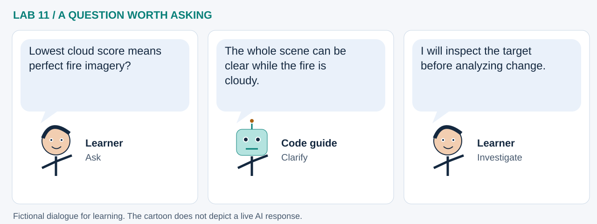

LAB 11 · 32-SECOND VISUAL WALKTHROUGH
From a fire shape to a scene shortlist
Which satellite acquisitions should we inspect around a selected fire?
Silent, captioned storyboard. Use the player to pause, seek or change playback speed. On a small screen, use fullscreen or read the transcript below. The diagrams explain the method; they are not recordings of a live model run.
Download MP4 · Captions · Open infographic at full size

What runs here?
Features, model fitting and ranking run in Pyodide; perimeters, STAC metadata and COG imagery come from remote services.
Mixed workflow: learned fire outliers and acquisition groups, plus a hand-set scene ranking rule.
Transcript and code landmarks
- 00–08s · Measure
Describe historical fire area, perimeter, date and compactness.
fires.to_crs(5070) - 08–16s · Select
Flag unusual profiles, then choose a case using the explicit sorting rule.
IsolationForest(...) - 16–24s · Discover
Search Sentinel-2 near the case in a bounded date window.
payload['bbox'] - 24–32s · Rank
Use an understandable preference rule and inspect the candidate over the fire.
0.65 * cloud + 0.35 * time
The common misconception

Read the cartoon dialogue
- Lowest cloud score means perfect fire imagery?
- The whole scene can be clear while the fire is cloudy.
- I will inspect the target before analyzing change.
Try explaining it
Which part is a learned model and which part is a chosen preference?
Check your reasoning
Isolation Forest learns unusual profiles; the 65/35 cloud/time weights are human-set ranking preferences.
Original educational illustrations and captions authored for this repository. See the notebook for data and software citations.